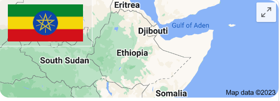

Which countries years have 13 months and are seven years behind the Gregorian calendar?
Answer: Ethiopa

Culture Fact #24. Ethiopian years have 13 months and are seven years behind the Gregorian calendar. Due to the Ethiopians
continued usage of the calendar that the Roman Catholic Church modified in 525 AD, the new century they celebrated on September 11,
2007.